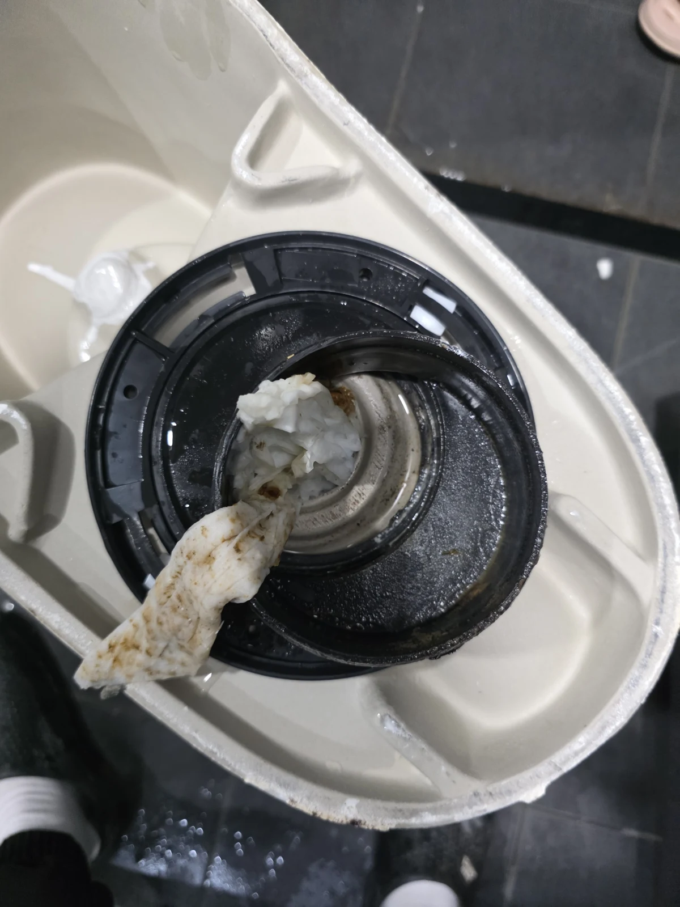
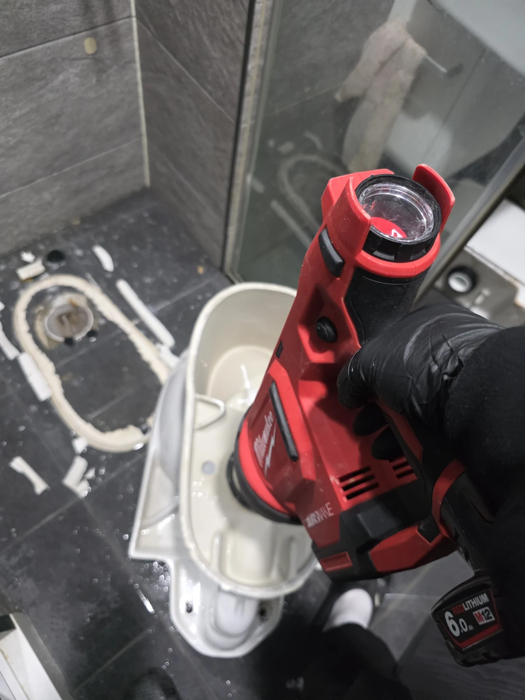

강서구 변기막힘 현장 도착과 진단
변기가 막혔을 때 탈거까지 해야 하는지 궁금하시다면, 먼저 시도한 작업의 결과와 남아 있는 문제를 함께 살펴보세요. 변기 탈거 전에는 어떤 설명이 필요한가요? 서울 강서구에서 변기 물이 꿀렁꿀렁 움직이는 증상으로 신라건축설비가 작업한 현장입니다. 물을 내렸을 때 평소처럼 배수가 이어지지 않아 변기막힘 원인을 살펴봐야 했습니다. 이런 증상이 있다고 곧바로 변기를 들어내는 것은 아닙니다. 먼저 현재 상태에서 시도할 수 있는 방법을 적용하고, 그 결과에 따라 다음 작업을 판단하는 과정이 필요합니다.
하수구막힘 상담으로 배수 문제를 문의하시더라도 실제 불편이 나타나는 곳이 변기인지, 연결된 하부 배관인지 구분해 살펴봅니다. 이번에는 변기와 그 아래 배출 경로에 걸린 이물질을 확인한 사례입니다. 처음부터 건물 전체 배관 문제로 범위를 넓히지 않고, 변기막힘 증상과 첫 작업의 반응을 바탕으로 접근했습니다.
변기가 막혔을 때 계속 물을 내리면 상태를 판단하기 어려워지고 넘침으로 이어질 수 있습니다. 상담할 때에는 물이 움직이는 모습과 이미 시도한 방법을 알려주시면 도움이 됩니다. 신라건축설비는 여러 현장을 경험한 베테랑 기사들이 증상을 듣고 작업 방향을 설명합니다. 이번 강서구 변기막힘 현장에서도 고객님이 다음 조치의 필요성을 이해하실 수 있도록 소통하며 진행했습니다.
1단계: 초기 작업 결과와 탈거 후 원인 확인
첫 작업은 석션이었습니다. 흡입으로 안쪽의 휴지를 밖으로 회수해 막힌 통로를 확보할 수 있는지 확인하려는 목적이었습니다. 실제로 많은 양의 휴지가 빨려 나왔습니다. 다만 회수량이 많다는 사실만으로 변기막힘이 해결됐다고 볼 수는 없었습니다. 이번 현장은 석션을 시도한 뒤에도 막힘이 해소되지 않아 다음 방법을 검토해야 했습니다.
같은 장비를 계속 사용하는 대신, 먼저 진행한 작업의 결과와 남아 있는 문제를 고객님께 충분히 설명했습니다. 변기 아래쪽을 직접 확인하려면 탈거가 필요하다는 점을 안내하고 협의한 다음 작업을 이어갔습니다. 고객님과 상의하는 과정은 단순한 안내 절차가 아니라, 작업 범위가 바뀌는 이유를 서로 이해하는 과정입니다.
합리적인 진행은 무조건 간단한 방법만 고집하는 것도, 처음부터 큰 작업을 선택하는 것도 아닙니다. 석션으로 가능한 부분을 먼저 시도하고 해결되지 않은 상태를 근거로 판단하는 것이 중요합니다. 이번 변기막힘 작업도 이 순서에 따라 탈거로 넘어갔습니다. 비용을 임의로 단정하기보다 실제 필요한 작업과 변경되는 범위를 설명하는 것이 신라건축설비가 중요하게 여기는 원칙입니다.

2단계: 막힘 처리와 변기 재설치
협의 후 변기를 탈거하자 아래쪽에 물티슈와 휴지가 잔뜩 걸려 있었습니다. 위에서 석션으로 휴지를 많이 회수했어도 하부에 남은 덩어리까지 모두 제거된 상태는 아니었던 것입니다. 변기막힘의 원인을 직접 확인하면서 왜 첫 작업만으로 해결되지 않았는지 설명할 수 있었습니다. 사진에는 탈거한 변기 배출구와 그 주변에 걸린 이물질이 담겨 있습니다.
먼저 하부 배관에 걸쳐 있던 물티슈와 휴지를 제거했습니다. 눈앞에서 확인되는 이물질을 정리한 다음, 남은 부분에는 에어건 작업을 진행했습니다. 제거할 수 있는 덩어리를 먼저 회수하고 잔여 부분을 처리하는 순서로 작업을 나눴습니다. 석션과 탈거, 에어건은 같은 목적의 장비 나열이 아니라 각 단계에서 남아 있던 문제에 맞춰 적용한 방법입니다.
강서구 변기막힘 현장에서 중요한 판단은 많은 휴지가 나왔다는 데서 멈추지 않은 점입니다. 탈거로 가려져 있던 배출구 쪽을 확인했고, 걸쳐 있는 물질을 제거한 뒤 후속 작업을 진행했습니다. 현장 경험은 장비를 많이 갖추는 것뿐 아니라 어느 단계에서 다른 접근이 필요한지 판단하는 데 쓰입니다. 작업 중 확인한 내용을 고객님께 설명하며 불필요한 오해 없이 진행하는 것도 중요하게 생각합니다.

작업 결과와 재발 방지
이물질 제거와 에어건 작업 후에는 변기를 다시 설치했습니다. 재설치한 상태에서 물을 내려 배수가 잘되는지 확인했고, 연결 부위에 누수가 없는 것도 점검했습니다. 작업 전 꿀렁거리던 증상과 작업 후 물내림을 비교해 변기막힘 조치 결과를 확인한 것입니다. 사용하실 변기를 다시 제자리에 놓고 주변까지 깔끔하게 마무리했습니다.
재발을 줄이려면 이번에 확인한 원인부터 관리해야 합니다. 물티슈는 변기에 넣지 말고 별도로 버려주세요. 화장실용 휴지도 한꺼번에 많은 양을 넣지 않는 편이 좋습니다. 배수 반응이 평소와 달라졌다면 반복해서 물을 내리기보다 사용을 멈추고 상태를 확인하세요. 변기막힘이 다시 생겼을 때 이전과 같은 원인이라고 단정하지 말고 증상과 작업 이력을 함께 전달하는 것이 도움이 됩니다.
강서구에서 변기 뚫는 업체를 찾으실 때에는 어떤 작업을 먼저 시도하고, 해결되지 않으면 무엇을 확인하는지 설명을 들어보세요. 신라건축설비는 베테랑 기사들의 현장 경험을 바탕으로 필요한 작업을 합리적으로 안내하고 고객님과 충분히 소통합니다. 이번처럼 원인 확인부터 재설치, 물내림과 누수 점검까지 이어지는 깔끔한 시공을 중요하게 생각합니다.
최종 조치: 석션 후 남은 물티슈·휴지를 변기 탈거로 확인하고 하부 배관에 걸친 이물질 제거와 에어건 작업을 진행했습니다. 변기 재설치 후 물내림이 원활하고 누수가 없는 것을 확인해 변기막힘 작업을 마쳤습니다.
현장 방문 전 확인하는 비용과 작업 범위
신라건축설비는 현장 증상과 배관 구조를 확인한 뒤 필요한 작업과 예상 비용을 안내합니다. 단순 관통으로 해결되는지, 배관내시경·석션·고압세척 또는 변기 탈거가 필요한지는 현장 상태에 따라 달라집니다. 출장비와 야간 작업비, 추가 장비 비용이 발생할 수 있는 경우 작업 전에 먼저 설명하고 동의를 받은 범위에서 진행합니다.
업체를 선택할 때 확인할 사항
무조건적인 ‘0원’ 표현보다 실제 작업 범위, 추가 비용 조건, 사용 장비와 사후 대응 기준을 확인하는 것이 중요합니다. 해결되지 않았을 때의 비용 기준과 작업 후 동일 증상 발생 시 점검 범위를 사전에 문의해두면 불필요한 분쟁을 줄일 수 있습니다.
강서구 변기막힘 자주 묻는 질문
변기막힘은 왜 반복되나요?
강서구 현장처럼 변기 물이 꿀렁꿀렁 움직이며 원활하게 내려가지 않았습니다. 증상은 원인이 현장마다 다를 수 있습니다. 변기 내부 이물질뿐 아니라 하부 오수관 막힘이나 배관 상태 때문에 반복될 수 있습니다. 같은 변기막힘이 재발하면 막힌 위치와 원인을 다시 확인하는 것이 중요합니다.
변기 물이 안 내려가거나 역류하면 변기뚫는업체를 불러야 하나요?
물이 천천히 내려가거나 수위가 차오르고 변기역류가 반복되면 단순 뚫어뻥보다 전문 장비 점검이 필요한 경우가 있습니다. 현장에서는 증상과 배관 구조를 먼저 확인합니다.
변기 이물질 막힘은 변기를 탈거해야 하나요?
물티슈·청소포·플라스틱·음식물처럼 변기 트랩에 걸린 이물질은 위치에 따라 변기 탈거가 필요할 수 있습니다. 무조건 탈거하지 않고 먼저 막힘 위치를 판단합니다.
변기뚫는업체는 어떤 장비로 작업하나요?
현장 상태에 따라 석션, 에어건, 배관내시경, 변기 탈거 등을 사용합니다. 하부 오수관 문제라면 변기만 뚫는 작업보다 배관 구간 확인이 중요합니다.
변기막힘 비용은 어떻게 정해지나요?
단순 관통인지, 이물질 제거와 변기 탈거가 필요한지, 오수관이나 공용배관 작업이 필요한지에 따라 달라집니다. 추가 장비나 작업이 필요하면 진행 전에 범위와 비용을 안내합니다.
변기에서 냄새가 나거나 물이 자주 차오르는 것도 막힘과 관련 있나요?
악취나 수위 이상이 항상 막힘 때문인 것은 아니지만 배수 불량, 오수관 상태, 연결부 문제와 함께 나타날 수 있습니다. 반복되면 현장 점검으로 원인을 구분해야 합니다.
변기막힘 서울·경기 출동지역
신라건축설비는 강서구 현장을 포함해 서울 25개 구와 경기도 31개 시·군의 배관 문제를 상담합니다. 현장 거리와 기사 배정 상황에 따라 출동 가능 여부를 먼저 안내드립니다.
서울 전 지역
강남구 · 강동구 · 강북구 · 강서구 · 관악구 · 광진구 · 구로구 · 금천구 · 노원구 · 도봉구 · 동대문구 · 동작구 · 마포구 · 서대문구 · 서초구 · 성동구 · 성북구 · 송파구 · 양천구 · 영등포구 · 용산구 · 은평구 · 종로구 · 중구 · 중랑구
경기도 주요 출동지역
수원시 · 용인시 · 고양시 · 화성시 · 성남시 · 부천시 · 남양주시 · 안산시 · 평택시 · 안양시 · 시흥시 · 파주시 · 김포시 · 의정부시 · 광주시 · 하남시 · 광명시 · 군포시 · 양주시 · 오산시 · 이천시 · 안성시 · 구리시 · 의왕시 · 포천시 · 양평군 · 여주시 · 동두천시 · 과천시 · 가평군 · 연천군